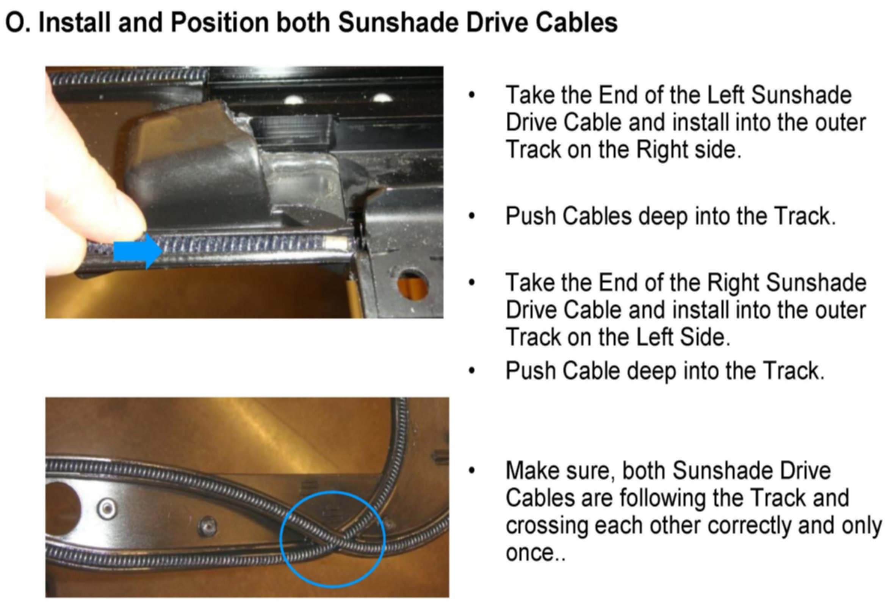

Step By Step Replace Sunshade Mechanic of Panorama Sunroof
Index
A. Preparation of Work Place and other needed items
B. Manually put Parts in Position
C. Remove Front Sunshade
D. Remove Cover Plates from Front Sunshade
E. Remove Rocker Arms, put Sunshade Drive Cables into next position
F. Remove Rear Sunshade in one piece
G. Remove both Rear Drop Boxes
H. Remove Rear Motor and Rear Slider of the Front Sunshade
I. Remove Sunshade Drive Cables and Lock Mechanism
J. Remove both Front Sliders of Front Sunshade
K. Install new Front Sliders of Front Sunshade
L. Install New Lock Mechanism

M. Install Sunshade Drive Cable Plates into Lock Mechanism
N. Install both Rear Sliders of Front Sunshade

O. Install and Position both Sunshade Drive Cables
P. Install Sunshade Drive Cable Cover Plate
Q. Prepare Aluminum Tabs to Install Rear Drop Boxes
R. Install Both Rear Drop Boxes
S. Install Rear Sunshade
T. Timing of both Sunshade Drive Cables
U. Install Sunshade Motor with Black Motor Insert
V. Install Front Sunshade Cover Plates with Rocker Arms
W. Install Rear End of Front Sunshade Cover Plates
X. Install Front Sunshade
Y. Final Test and Secure Both Drop Boxes